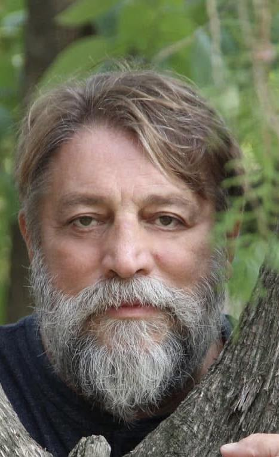

← Înapoi la poeme

scriu pentru că doare
undeva
înăuntru
cuvântul arde precum fierul incandescent
nimeni nu înțelege că scrisul este o formă de a iubi
că este o formă de a respira
că este o modalitate de a urla înlăuntrul tău
înlăuntrului tău de înger rătăcit de păsări
mă trezesc în cerul nopții și aud în lăuntricele mele nerespirări
cum aleargă cuvintele cu pași mărunți
prin pod
și-mi trece prin minte o frică rostogolită
că m-au invadat cuvintele
că de undeva
din tavanul vieții mele mărunte
picură versuri din sângele meu scris
și pun o găleată
să le strâng
să se umple cu poeme lichefiate
știu că la răsărit
în găleată aceea de tablă
va zâmbi lumina primei zile din cele care mi-au mai rămas de scris
cufund mâinile avide în găleata care pulsează precum jarul unei inimi
și-mi dau cu cuvinte pe față să mă trezesc
stau pe prispă cu picioarele înfipte în aerul rece
și mă simt puternic
precum un strigăt de luptă
pe pieptul meu de bărbat răzvrătit
curg șiroaie versurile
poemului crud
de martie
la colțul zorilor Dumnezeu a lăcrimat primele brândușe
iar eu curg șiroaie a cuvinte crude
sunt pasărea cuvintelor mele ude
un fel de salcie plângătoare
la marginea unui deșert de vise
care urlă a viață
iartă-mă
Doamne
că nu mă știu iubi destul
cât să curg
în lumină
zbor
zic